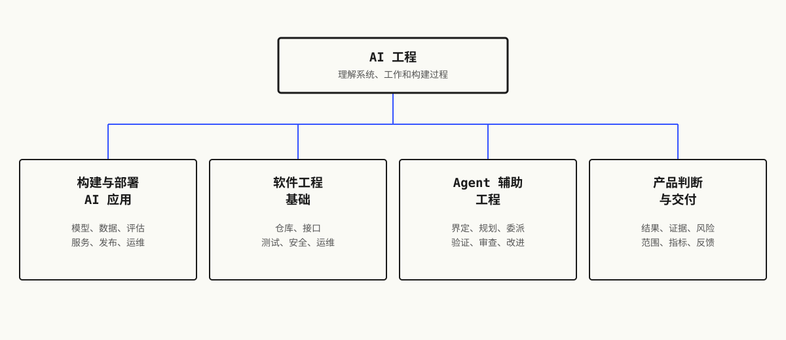

建议先学刚接触 AI 工程
先搭好可用环境、运行仓库并熟悉课程流程，再选择专项方向。
523 节课，20 个阶段。每个算法都先从最原始的数学搭起来，然后才轮到框架登场。
由 Rohit Ghumare 及贡献者维护。在你自己的机器上运行。
npx skills add fancyboi999/ai-engineering-from-scratch-zh > 使用 start-learning 开始课程。
让 agent 成为你的导师：先做水平诊断，再生成个性化路线，并在终端中互动授课。
大多数 AI 教材都是碎片化教学。这儿一篇论文，那儿一篇微调心得，别处再来个炫酷的 agent demo。这些碎片很少能拼到一起。你做出了一个聊天机器人，却讲不清它的 loss 曲线；你给 agent 挂了个函数，却说不出调用它的那个模型内部，attention 到底在干什么。
这套课程就是那根脊椎。20 个阶段，523 节课，四种语言：Python、TypeScript、Rust、Julia。一头是线性代数，另一头是自主 agent 集群。每个算法都先从最原始的数学手写出来。反向传播、分词器、注意力、agent 循环——等 PyTorch 登场时，你已经知道它底层在做什么了。
每节课都跑同一个循环：读懂问题、推导数学、写代码、跑测试、留下产物。没有五分钟速成视频，没有复制粘贴式部署，没有手把手喂饭。免费，开源，在你自己的笔记本上就能跑。

先搭好可用环境、运行仓库并熟悉课程流程，再选择专项方向。
从 prompt、结构化输出、嵌入和检索，走到评估、服务、可观测性和安全发布。
建立 AI 系统依赖的仓库、环境、接口、调试、验证、安全、发布和运维基础。
界定任务，从仓库证据规划，设计循环和 harness，隔离式委派，验证结果并保留反馈。
把观察到的工作转化为结果、假设、可测试切片、可执行规格、度量计划、分阶段发布和明确负责的反馈。
从网络信封到发布门，构建、保护、验证并运行无状态 MCP 系统。
在真实 agent 宿主中构建、调用、路由、保护、评估、打包和验证可移植的技能。
选择一条认证路线，完成实践实验，保留学习者自主产物，并使用原创评估题。
四条 Claude 认证路线，仍然是这套课程的学法：逐步理解、运行实验、交付可检查产物，再用诊断和限时模拟题找出薄弱决策。
4 条路线33 节认证课295 道原创评估题
不隶属于 Anthropic，不颁发证书，也不保证通过。
整套课程都在 GitHub 上。clone 它、fork 它，按自己的节奏学。没有付费墙，不用注册。每节课都有可运行的代码——Python、TypeScript、Rust 或 Julia，看哪种最适合讲清楚这个概念。
git clone https://github.com/fancyboi999/ai-engineering-from-scratch-zh.git